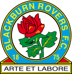

Campeões da Premier League
2022-23
2021-22
2020-21
2019-20
2018-19
2017-18
2016-17
2015-16
2014-15
2013-14
2012-13
2011-12
2010-11
2009-10
2008-09
2007-08
2006-07
2005-06
2004-05
2003-04
2002-03
2001-02
2000-01
1999-00
1998-99
1997-98
1996-97
1995-96

1994-95
1993-94
1992-93
Campeões da Football League First Division
A Football League First Division era o torneio de maior importância do futebol inglês entre 1888 e 1992, ano que os clubes da First Division romperam com a Football League para formarem a Premier League.
| Temporada | Time |
|---|---|
| 1991-92 | Leeds United |
| 1990-91 | Arsenal |
| 1989-90 | Liverpool |
| 1988-89 | Arsenal |
| 1987-88 | Liverpool |
| 1986-87 | Everton |
| 1985-86 | Liverpool |
| 1984-85 | Everton |
| 1983-84 | Liverpool |
| 1982-83 | Liverpool |
| 1981-82 | Liverpool |
| 1980-81 | Aston Villa |
| 1979-80 | Liverpool |
| 1978-79 | Liverpool |
| 1977-78 | Nottingham Forest |
| 1976-77 | Liverpool |
| 1975-76 | Liverpool |
| 1974-75 | Derby County |
| 1973-74 | Leeds United |
| 1972-73 | Liverpool |
| 1971-72 | Derby County |
| 1970-71 | Arsenal |
| 1969-70 | Everton |
| 1968-69 | Leeds United |
| 1967-68 | Manchester City |
| 1966-67 | Manchester United |
| 1965-66 | Liverpool |
| 1964-65 | Manchester United |
| 1963-64 | Liverpool |
| 1962-63 | Everton |
| 1961-62 | Ipswich Town |
| 1960-61 | Tottenham Hotspur |
| 1959-60 | Burnley |
| 1958-59 | Wolverhampton Wanderers |
| 1957-58 | Wolverhampton Wanderers |
| 1956-57 | Manchester United |
| 1955-56 | Manchester United |
| 1954-55 | Chelsea |
| 1953-54 | Wolverhampton Wanderers |
| 1952-53 | Arsenal |
| 1951-52 | Manchester United |
| 1950-51 | Tottenham Hotspur |
| 1949-50 | Portsmouth |
| 1948-49 | Portsmouth |
| 1947-48 | Arsenal |
| 1946-47 | Liverpool |
| 1939/40-1945/46 | Liga suspensa devido a Segunda Guerra Mundial |
| 1938-39 | Everton |
| 1937-38 | Arsenal |
| 1936-37 | Manchester City |
| 1935-36 | Sunderland |
| 1934-35 | Arsenal |
| 1933-34 | Arsenal |
| 1932-33 | Arsenal |
| 1931-32 | Everton |
| 1930-31 | Arsenal |
| 1929-30 | Sheffield Wednesday |
| 1928-29 | The Wednesday |
| 1927-28 | Everton |
| 1926-27 | Newcastle United |
| 1925-26 | Huddersfield Town |
| 1924-25 | Huddersfield Town |
| 1923-24 | Huddersfield Town |
| 1922-23 | Liverpool |
| 1921-22 | Liverpool |
| 1920-21 | Burnley |
| 1919-20 | West Bromwich Albion |
| 1915/16-1918/19 | Liga suspensa devido a Primeira Guerra Mundial |
| 1914-15 | Everton |
| 1913-14 | Blackburn Rovers |
| 1912-13 | Sunderland |
| 1911-12 | Blackburn Rovers |
| 1910-11 | Manchester United |
| 1909-10 | Aston Villa |
| 1908-09 | Newcastle United |
| 1907-08 | Manchester United |
| 1906-07 | Newcastle United |
| 1905-06 | Liverpool |
| 1904-05 | Newcastle United |
| 1903-04 | The Wednesday |
| 1902-03 | The Wednesday |
| 1901-02 | Sunderland |
| 1900-01 | Liverpool |
| 1899-1900 | Aston Villa |
| 1898-99 | Aston Villa |
| 1897-98 | Sheffield United |
| 1896-97 | Aston Villa |
| 1895-96 | Aston Villa |
| 1894-95 | Sunderland |
| 1893-94 | Aston Villa |
| 1892-93 | Sunderland |
| 1891-92 | Sunderland |
| 1890-91 | Everton |
| 1889-90 | Preston North End |
| 1888-89 | Preston North End |